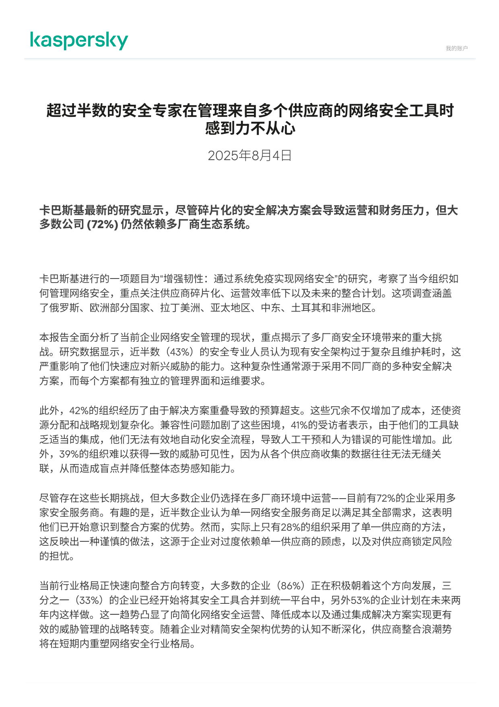
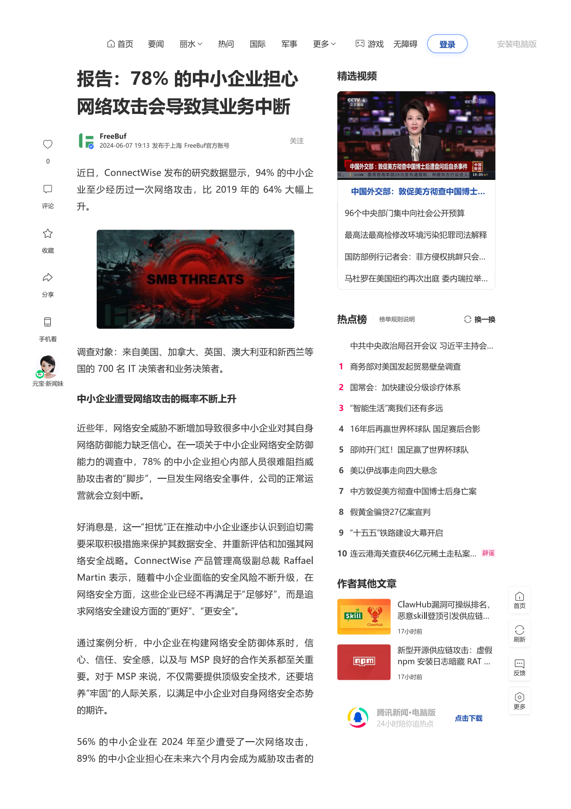
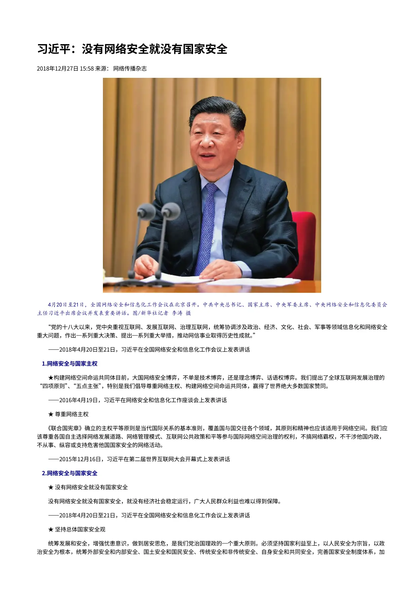
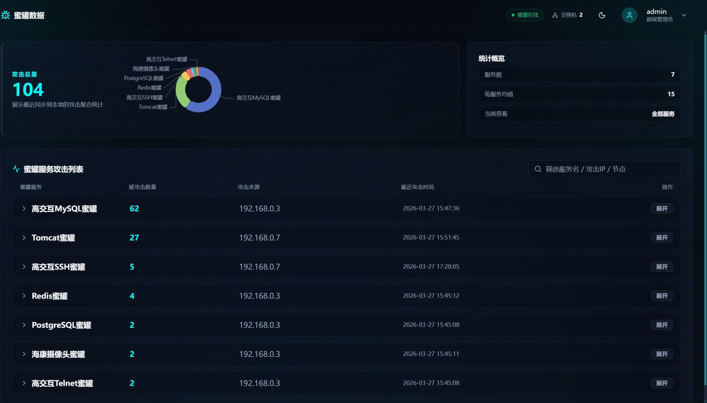
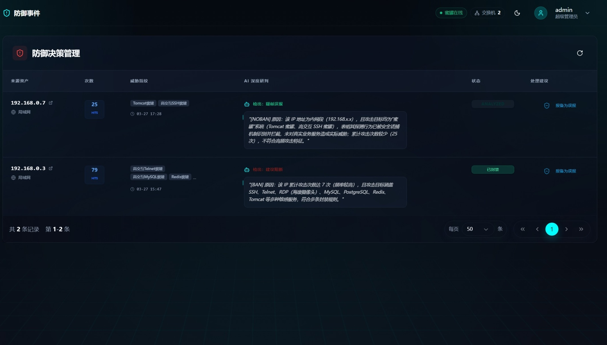
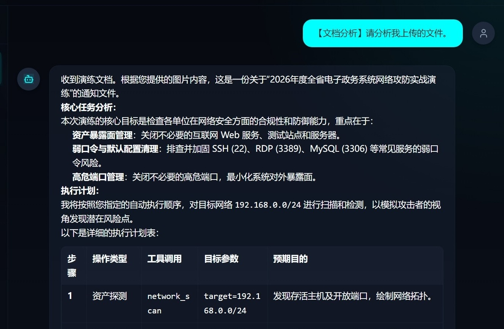

没有网络安全就没有国家安全，没有信息化就没有现代化。
复杂威胁与预算超支
卡巴斯基研究显示：72%企业依赖多厂商生态，42%组织因解决方案重叠导致预算超支。
中小企业防线薄弱
ConnectWise统计：高达 94% 的中小企业曾遭遇网络攻击，78%难以阻挡复杂威胁。
按 [空格键] 或 [右箭头] 开始
卡巴斯基研究显示：72%企业依赖多厂商生态，42%组织因解决方案重叠导致预算超支。
ConnectWise统计：高达 94% 的中小企业曾遭遇网络攻击，78%难以阻挡复杂威胁。



以“AI + 网络安全”技术深度融合为核心，精准适配中小企业与校园两大核心场景，
推动网络防护从传统的“被动应对”向“主动防御”历史性跨越。
通过部署看似脆弱的虚假系统（如网页后台文件系统），故意引诱黑客发起攻击。

攻击者扫描并进入预设的伪装管理后台
黑客下载并运行含探针的伪装依赖插件
系统自动截取黑客桌面并开启摄像头抓拍
所有敏感信息加密回传至玄枢控制中心
针对校园或企业内网环境的“暗网”搭建问题，提供智能化巡检能力。
用户通过自然语言询问内网资产状况
AI 调用探针插件全量扫描存活 IP 与端口
自动爬取网页内容并截取违规站点画面
面对庞大网络设备数量，摒弃逐台命令配置的繁琐工作，引入AI驱动的自动化命令下发配置。
AI 实时分析专家下达的配置变更请求
根据设备型号自动翻译为 CLI 或 Netconf 脚本
秒级完成全网交换机配置同步与情景切换
直面海量日志分析难题，依托AI实现：智能识别 -> 秒级响应 -> 自动隔离。

AI 探针 7x24 小时不间断分析核心交换机流量
精准捕捉暴力破解、DDoS 等攻击特征
自动下发封禁指令，瞬间切断黑客物理连接
智能分析政策文件。核心特性：快捷上传，自动分析，给出建议。

自动精准解析未知的目标文件结构与关键元数据
基于文件静态特征自动编排多阶段动态检测策略
智能调度AI工具获取信息
输出直观的风险画像并提供确切的拦截与放行建议
利用已知漏洞执行 DoS 攻击导致终端蓝屏死机。
非法指令运行 → 广播控制劫持 → 系统全网蓝屏
专家意图下发 → AI 自动化补丁分发 → 业务恢复正常
降低安全门槛，削减冗余开支，实现中小企业“开箱即用”的安全防护圈。
响应国家安全战略，保护个人与企业数字资产，维系社会数字化运转的底座安全。
推动安全产品向AI自驱转型，打造下一代主动防护体系的标准样板。
感谢各位评委专家的聆听与指导！